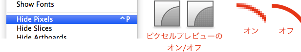

Sketch.app Advent Calender 2013 13日目の記事です。
今回はSketch.appのアートボードに関する内容でお届けします。
Sketchの基本。というSketch（Sketch 3）の基本操作にフォーカスした電子書籍をリリースしました。詳しくはこちらの「Sketchの基本。」のページをご覧ください。
この記事はSketch 2を元にした記事です。最新版の動作とは異なる可能性が高いため、参考程度にご覧ください。
新規ドキュメントを作成した場合、アートボードは設定されていません。素材作りなど特にサイズを制限する必要ない場合は、そのまま使えばOKです。
アートボードを作成する場合は、ツールバーからアートボード編集モードにし、ドラッグでアートボードを描画します。描画したアートボードはInspectorで細かく調整できるので、大雑把で大丈夫です。編集が終わったら、アートボード外をクリックするかEscキーで戻ります。ちなみにメニューやショートカットはありません。
アートボードができると、アートボード外が薄いグレーになり、アートボード左上にアートボード名が表示されます。アートボード名の変更はレイヤーリストからできますので、「Sketch.appのレイヤーリストを解説するよ。」を参照してください。
アートボードのプリセット
またアートボード編集モードになると、ツールバーの下にアートボードサイズのプリセットが表示されますので、ここから選んでもOKです。
アートボードを選択すると、プリセットの横に「＋」マークが表示され、任意でプリセットを追加できます。ここで追加したプリセットは、他のドキュメントでも使うことができます。
プリセットの削除は、ドラッグで枠外に移動させます。
アートボードプレビュー
［Window］の中に、「Show Artboard Preview（表示していたらHide 〜）」があります。これは、現在編集しているアートボードの大きさでプレビューできるウィンドウが表示されます。アートボードからはみ出している部分表示されません。若干描画更新が遅いことがネックですが…
ピクセルプレビュー
このアプリでピクセルプレビューをオフにすることは稀だと思いますが、［Window］の「Show/Hide Pixels」で切り替えができます。デフォルトのツールバーにあるウィンドウっぽいアイコンの中にもあります。あるショートカットはControl＋Pです。

また、表示を800%以上にした場合、ピクセルグリッドが表示されます。これも［Window］メニューにある「Show/Hide Pixel Grid」で切り替えができます。ショートカットはControl＋Xです。ちなみに、800%以上でないと、メニューがアクティブになりません。